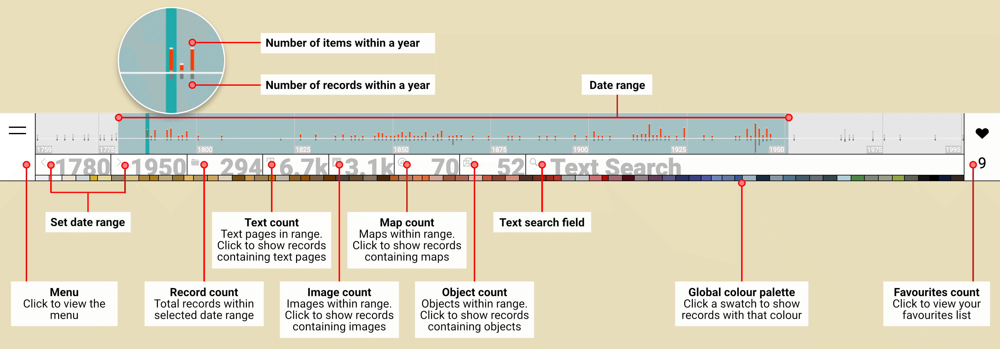
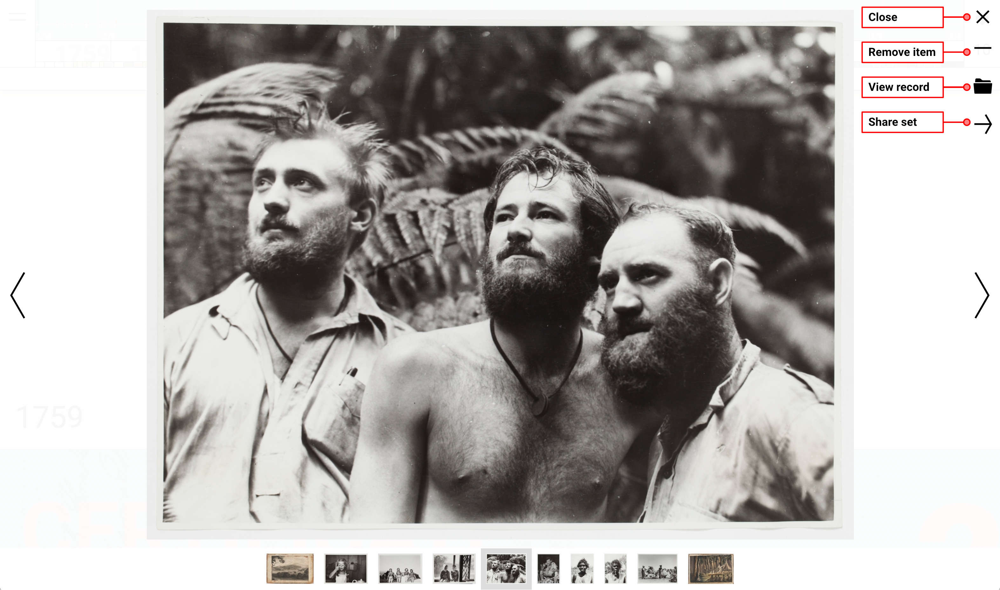

The State Library of NSW's Visionaries collection is comprised of over {{images.length}} digitised items representing events, characters and places of historical significance.
Click here for details about using this site. Click here to learn more about this project.
Visionaries
How-To use this site
Visionaries is a collection of {{records.length}} records curated from the State Library of NSW catalogue. The {{records.length}} records contain {{images.length}} items including pages of text, artworks, photographs, maps and objects. This site allows you to explore the collection.
Header
Use the site header to filter the collection. Some of the ways you can filter:
- Show records within a specific date range. eg. 1935-1950.
- Show records containing items of a particular type (Text, Image, Map, Object).
- Search for a word or phrase. eg. "federation"
- Combine all of these filters. eg. Show records between 1910-1950 that include Images and the word "war".
Records & Items

Inside each record you'll find items of different types: text, artworks, photographs, maps and objects. Some records have hundreds of items while others have only a few.
You can filter the items within a record by type and colour. eg. Show items within the record that are Images and feature the colour .
Click the plus symbol on a tag to filter the whole collection. eg. Show all records with the keyword "cook".
Click the link symbol on a title or tag to link through to the SLNSW catalogue. eg. View all catalogue records with the tag "Voyages and travels--18th century".
Click the heart symbol on an item to add it to your collection of favourites.
Favourites
Click the heart symbol in the site header to view your custom collection of favourites.
In the Favourites viewer you can remove items, link back to a source record, or share your set with others via email or social media.
Explore
The best way to learn more about this site and the Visionaries collection is to dig around and make your own discoveries.
About
This site was developed by Geoff Hinchcliffe for the State Library of NSW DX Lab's Digital Fellowship. The project responds to the following brief:
The Visionaries program identified items in its collections which supported the schools curriculum. These items were digitised and loaded onto the Library’s website, but their display was not easy to search and use. Visionaries did provide rich curriculum relevant digital content but to capitalise upon its strengths, a new interface is required to create a much more engaging and purposeful experience than it currently has.
The project's novel interface combines attributes of web design, graphic design and data visualisation. The different interface elements provide a unique overview of the collection and improve opportunities for access and exploration. The project also seeks to enliven the collection - to surface some of the rich visual character of the items held within each record.
Ultimately, the project aims to support purposeful and strategic intent, as well as playful and serendipitous discovery.
{{year.year}}
{{records_assoc['_'+priref].showtitle[0]}} {{records_assoc['_'+priref].showtitle[1]}}
{{records_assoc['_'+priref].ImgTotal}}
- {{records_assoc['_'+priref].Title}}
- {{records_assoc['_'+priref].materials.t}}
- {{records_assoc['_'+priref].materials.i}}
- {{records_assoc['_'+priref].materials.m}}
- {{records_assoc['_'+priref].materials.o}}